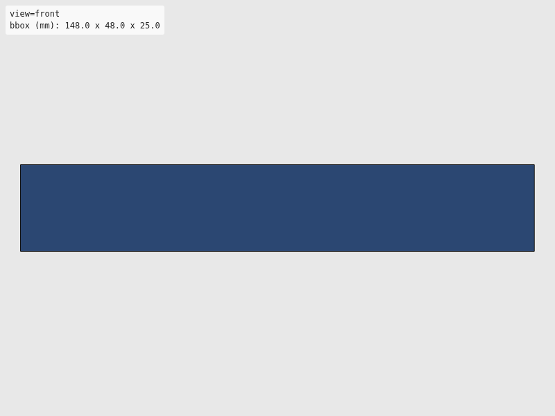
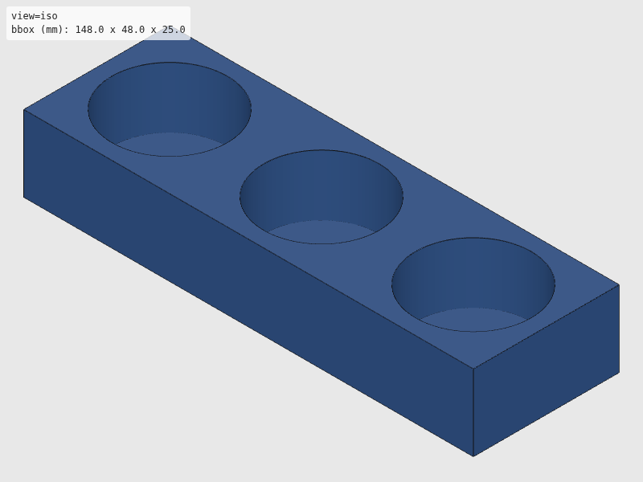
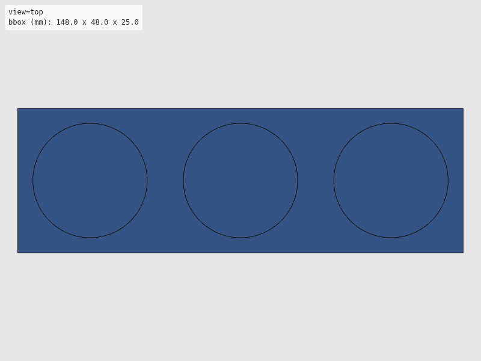
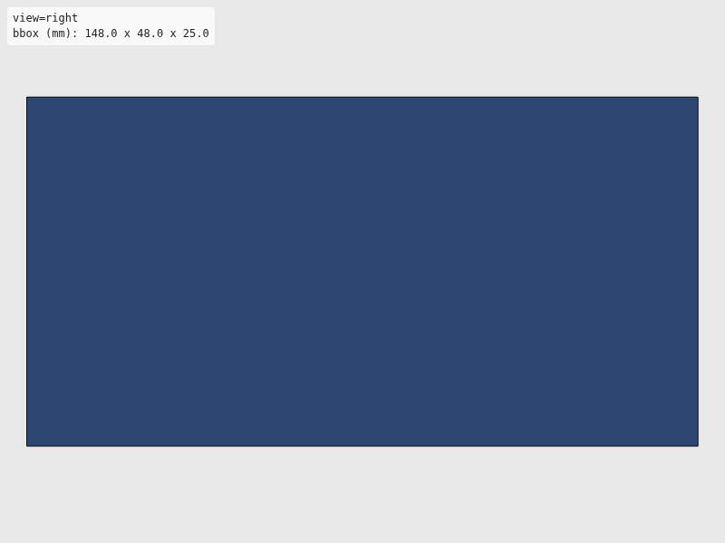

Verdict: review
Green is necessary, not sufficient: these checks cannot see local defects. Look at the render and decide.




The intent as written, for comparison with the renders. Not checked.
"""3-station tool parking dock.
Holds 3 tools side-by-side with magnet retention.
Reference: Berkeley passive tool changer parking housing.
Usage:
uv run --group cad python hardware/cad/so101/tool_dock.py
"""
# Shared export helper (standalone mode)
import sys
from pathlib import Path
from build123d import Box, Cylinder, Pos
sys.path.append(str(Path(__file__).resolve().parent.parent))
from util.export import export_part
sys.path.pop()
# --- Parameters (all in mm) ---
SLOT_DIAMETER = 38.0 # Fits tool cone base (36mm + clearance)
SLOT_DEPTH = 20.0
SLOT_SPACING = 50.0 # Center-to-center
NUM_SLOTS = 3
BASE_THICKNESS = 5.0
MAGNET_DIAMETER = 5.0
MAGNET_DEPTH = 3.0
DOCK_LENGTH = SLOT_SPACING * (NUM_SLOTS - 1) + SLOT_DIAMETER + 10
DOCK_WIDTH = SLOT_DIAMETER + 10
def build_tool_dock():
"""Build 3-station tool parking dock."""
base = Box(DOCK_LENGTH, DOCK_WIDTH, BASE_THICKNESS + SLOT_DEPTH)
for i in range(NUM_SLOTS):
x = (i - 1) * SLOT_SPACING
slot = Pos(x, 0, BASE_THICKNESS / 2) * Cylinder(SLOT_DIAMETER / 2, SLOT_DEPTH)
base = base - slot
# Magnet pocket at bottom of each slot
z = -(BASE_THICKNESS + SLOT_DEPTH) / 2 + MAGNET_DEPTH / 2
mag = Pos(x, 0, z) * Cylinder(MAGNET_DIAMETER / 2, MAGNET_DEPTH)
base = base - mag
return base
def export(part) -> None:
"""Export to STL and SVG."""
export_part(part, "so101", "tool_dock_3station")
if __name__ == "__main__":
export(build_tool_dock())
| Check | Status | Detail |
|---|---|---|
| file_integrity | PASS | binary STL: header present, 3036 triangles, file length matches 84 + 50*n |
| watertight | PASS | watertight=True, winding_consistent=True, euler_number=2 (reported only, not asserted — plan §7.2) |
| bbox | SKIP | no --envelope given |
| volume | SKIP | no --volume-band given |
| browser_load | PASS | viewer reported body[data-state]=rendered |
| render | PASS | 4 view(s) captured at 800x600 |